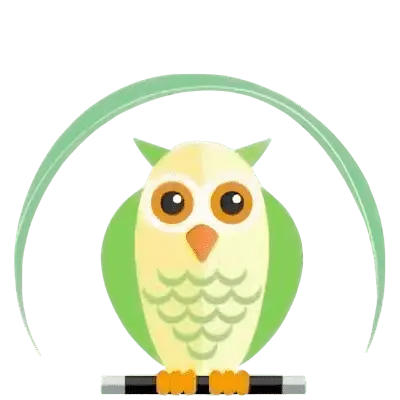
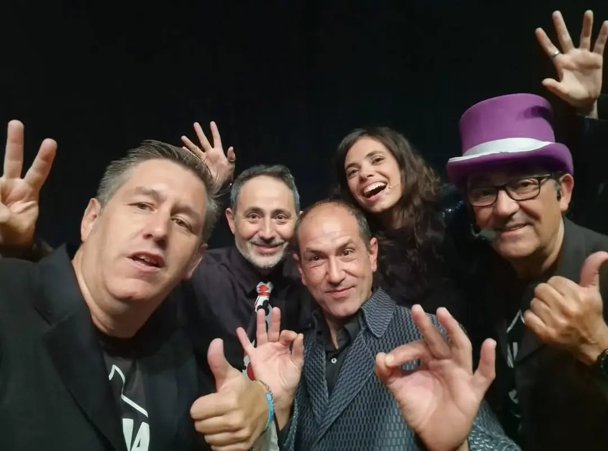

30 años creando ilusiones en nuestra tierra.

Somos una asociación sin ánimo de lucro dedicada a promover, dignificar y compartir el arte de la magia en todas sus facetas. Desde la cartomagia más íntima hasta las grandes ilusiones.
Dignificamos el ilusionismo como arte.
Contacto con entidades mágicas.
La magia como herramienta social.
Varios magos en escena con diferentes disciplinas mágicas como magia visual, magia cómica, mentalismo... Durante más de treinta años hemos llenado el Teatre del Raval de Castellón. Ahora, en tu localidad, puedes tener este increíble festival mágico.
Una jornada de magia para zonas del interior. Talleres de magia, magia de cerca y estaciones mágicas itinerantes en los enclaves más estratégicos de la localidad.
No instalamos escenarios. El pueblo es el escenario.
Contamos con los mejores magos de la provincia. Contrata magia de cerca, espectáculos de magia unipersonales para tu evento.
Realizamos colaboraciones con otras entidades.Talleres de magia, proyectos adaptados, actuaciones de magia personalizadas.